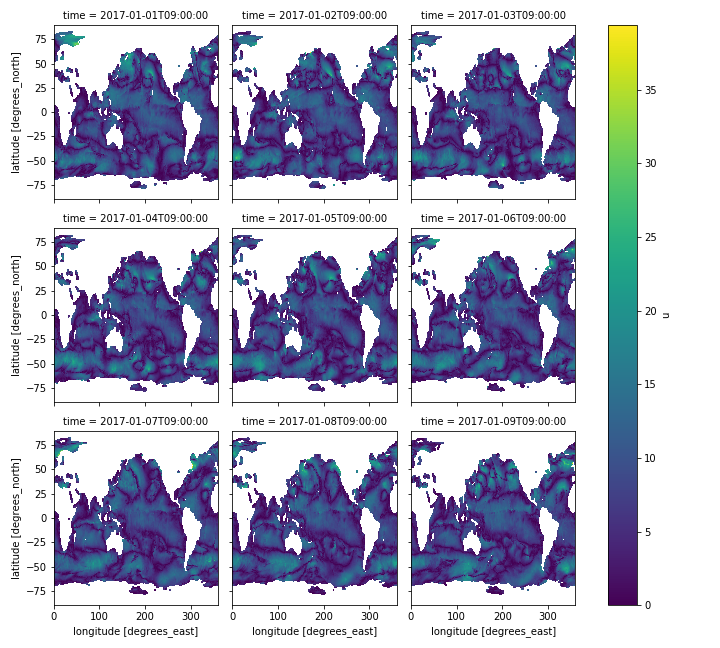

Conteúdo rápido para consultas posteriores sobre manipulação de dados multidimensionais com Python.
Dependências:
- Python 3.x;
- Jupyter Notebooks;
- xarray;
- dask;
- matplotlib;
O trecho de código abaixo realiza o download dos dados de Ventos do Mar Misturados (Blended Sea Winds) para o ano de 2017. Para alterar o período de tempo, altere a string de matching 'uv2017010?rt.nc', supondo que você queira adquirir dados de todo o ano de 2017, 'uv2017????rt.nc':
import os
import sys
import ftplib
import fnmatch
ftp = ftplib.FTP('eclipse.ncdc.noaa.gov') # Define servidor FTP a ser acessado
ftp.login() # Realiza autenticação perante o servidor
ftp.cwd('/pub/seawinds/SI/uv/daily/netcdf/2000s') # Define diretório atual
filenames = ftp.nlst() # Lista diretórios e arquivos no diretório atual
filenames = fnmatch.filter(filenames, 'uv2017010?rt.nc') # Filtra arquivos desejados
filenames = sorted(filenames) # Coloca os arquivos em ordem alfabética
for filename in filenames:
f = open(filename, 'wb').write
ftp.retrbinary('RETR {}'.format(filename), f)
Agora vamos abrir os arquivos obtidos:
import xarray as xr
ds = xr.open_mfdataset(filenames)
print(ds)
A função open_mfdataset recebe a lista de arquivos para abrir e retorna um objeto xarray.Dataset. O resultado de print(ds) são os metadados dos dados abertos.
<xarray.Dataset>
Dimensions: (lat: 719, lon: 1440, time: 9, zlev: 1)
Coordinates:
* zlev (zlev) float32 10.0
* lat (lat) float32 -89.75 -89.5 -89.25 -89.0 ... 89.0 89.25 89.5 89.75
* lon (lon) float32 0.0 0.25 0.5 0.75 1.0 ... 359.0 359.25 359.5 359.75
* time (time) datetime64[ns] 2017-01-01T09:00:00 ... 2017-01-09T09:00:00
Data variables:
u (time, zlev, lat, lon) float32 nan nan nan nan ... nan nan nan nan
v (time, zlev, lat, lon) float32 nan nan nan nan ... nan nan nan nan
w (time, zlev, lat, lon) float32 nan nan nan nan ... 0.0 0.0 0.0 0.0
Attributes:
Conventions: COARDS, CF-1.0, Unidata Dataset Discovery v1.0
title: NOAA/NCDC Blended daily 0.25-degree Sea Surface Winds
source: Multiple satellite observations: DMSP SSMI F08, F10,...
summary: Gridded and blended sea surface vector winds from mu...
Keywords: sea winds, ocean winds, sea surface winds, air-sea i...
references: links at http://www.ncdc.noaa.gov/oa/rsad/blendedsea...
History: Simple spatiotemporally weighted Interpolation (SI),...
institution: NOAA NESDIS National Climatic Data Center
Contact: Huai-Min.Zhang AT noaa.gov or satorder AT noaa.gov; ...
Acknowledgment: The gridded data were generated from the multiple sa...
Data_Calendar_Date: 2017-01-01
Para calcular a magnitude de 'u' e 'v'.
import numpy as np
mag = np.sqrt(ds['u'] ** 2 + ds['v'] ** 2)
Obs.: Um material para consulta, aqui.
Para gerar gráficos, vamos utilizar a api da biblioteca xarray.
plt.figure(figsize=(12, 8))
mag.isel(zlev=0).plot(x='lon', y='lat', col='time', col_wrap=3)
